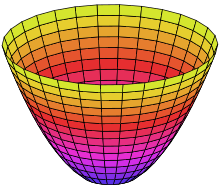
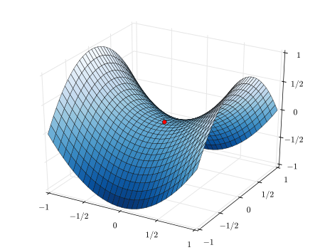

Multivariable Calculus
6. Multivariable Calculus#
The function
defines a mapping from \(\mathbb{R}^2\) to \(\mathbb{R}\). For each pair of input values \((x, y)\) we calculate an output value \(z = x^2 + y^2\). We can visualise this function as a surface in three dimensions, a paraboloid.

The paraboloid has a stationary point (a local minimum) at \((0, 0)\).
Another way to visualise this function is using a contour plot which we can generate using the Matplotlib function plt.contour(X, Y, Z). A contour plot shows the level curves of the function.
import numpy as np
import matplotlib.pyplot as plt
X0 = np.linspace(-1, 1, 100) # set x limits
Y0 = np.linspace(-1, 1, 100) # set y limits
X, Y = np.meshgrid(X0, Y0)
Z = X**2 + Y**2 # calculate the value of Z for each X, Y
fig = plt.figure(figsize = (5,5))
cs = plt.contour(X, Y, Z, levels=10)
plt.clabel(cs)
<a list of 17 text.Text objects>
Don’t worry if you can’t understand this code. The most important line is
Z = X**2 + Y**2
which defines the function \(z(x, y) = x^2 + y^2\).
Exercise 6.1
By experimenting with the code, determine
what the parameter
levels=10doeswhat the line
plt.clabel(cs)does (try removing this line)
Solution to Exercise 6.1
levels=20causes 20 level curves to be displayedplt.clabel(cs)causes the level curve values to be displayed
The function
Defines a hyperbolic paraboloid which has a saddle point at \((0, 0)\).

Exercise 6.2
Plot the level curves of
Solution to Exercise 6.2
X0 = np.linspace(-1, 1, 100) # set x limits
Y0 = np.linspace(-1, 1, 100) # set y limits
X, Y = np.meshgrid(X0, Y0)
Z = X**2 - Y**2 # calculate the value of Z for each X, Y
fig = plt.figure(figsize = (5,5))
cs = plt.contour(X, Y, Z, levels=10)
plt.clabel(cs)
Exercise 6.3
Plot the level curves of
And compare your plot to the figure in this week’s problem sheet.